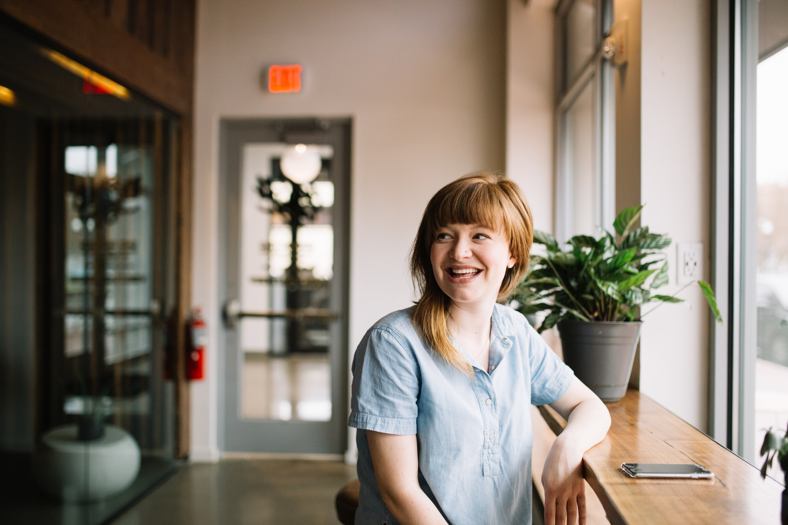
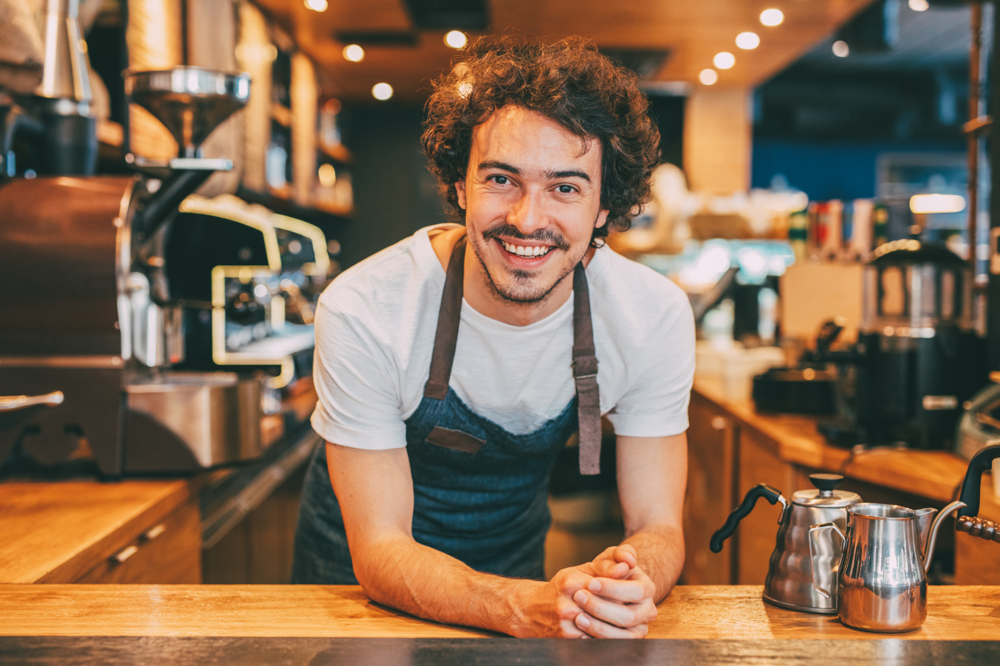

Putting a small town back on the map.
Visit Merkel is a website to help people find information on small businesses in Merkel, Texas. The town is in the process of a complete refurbishment and many new businesses have opened. Visit Merkel makes it easier for people to find information on multiple businesses as well as local events. It's a win-win product providing excellent advertising for small businesses and a great resource for residents and visitors. Merkel does not currently have a Chamber of Commerce but a website like this would be a good source of income to get one started again.
my role
I am responsible for the entire design process:
Research, Wireframes, Protoypes, Visual Design, Testing
timeline
July 2021 - in progress
project type
Concept
The city of Merkel is being revamped and there are many new businesses opening. Residents and non-residents alike are having trouble finding information on some of the new businesses especially if they are not on social media.
Create a website to host information on multiple businesses with easy to find business hours and links to business websites and social media.
I began by conducting interviews with Merkel residents and business owners to confirm my hypothesis that it was difficult for people to find information on local businesses. Then I created a survey to gather more information to back up my findings. I used this information to create two personas (a business owner and a former Merkel resident) which helped to keep me focused on the user during the rest of the design process. I used the personas to create user stories and and a user journey map. I researched other "Visit..." websites to see how they showcase businesses and identify pain points. I created a site map before I started on paper wireframes with responsive layouts. I will be converting these to digital wireframes and creating a low fidelity prototype for testing. After usability testing, I will create mockups and a high fidelity prototype.
I conducted 3 interviews with individuals ranging in age from 33-55. One a former Merkel resident, one a current Merkel resident and one a Merkel small business owner. The interviews confirmed my hypothesis that residents and non-residents were having trouble finding information on the new businesses opening in Merkel. Participants agreed that if you didn't know the name of the business or they were not on social media then information was very difficult to find.
"I feel like for local businesses, it’s tricky to find info when they first open, but that’s the time that most people are trying to find out about it. If businesses make online info a priority, I think it’d be super helpful with the jumpstart!"
I conducted a survey of 30 participants ranging in age from 19-70 including residents, former residents, and business owners. The results backed up my findings from the interviews and showed that around 50% of participants were having trouble finding information regardless of age or resident status.
What made it difficult to find information?
"It wasn't available online."
"Not knowing the store name because it has changed hands multiple times."
"We don't have a newspaper for those to advertise anymore."
When I have a large amount of data from user research, I like to use an affinity map to group information together. It helps me to organize the information and form insights.
I created the personas of Ashley, a former Merkel resident, and Matt, the owner of a new Merkel business, to help me better understand the users for this project. As a product designer it is important to me to make sure that the product is useful and enjoyable for users but that it also brings value to businesses who would pay to be featured on the website. I tried to keep both points of view in mind during the design process.
meet ashley...
"I wish all the information was in one place."
meet matt...
"It would be great to bring in more customers from out of town."
After analyzing competitors and thinking about user needs, I created a sitemap to use as a reference as I worked on wireframes.
As I began designing layouts, I thought about how the design could be responsive and created wireframes for desktop/tablet and mobile screens.
Check back for updates.